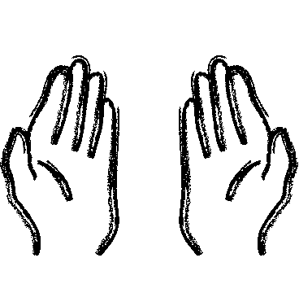

hands-free call interaction
a natural way to respond when your hands are busy
I worked alongside another Product UX designer on a hands-free call experience for Bose wearables. We collaborated closely with engineering to define the interaction and with user research to test and improve its performance.
impact overview
4 products
Implementation across wearables
>95% system success rate
Measured alongside other performance metrics
patent review
Interaction considered for patent protection
the opportunity
Wearables are used across different activities and environments, including times when your hands are occupied. Reaching for your phone or headphones while cooking or working out, for example, isn’t always convenient.
We explored how a hands-free interaction could give people another way to respond to incoming calls without interrupting what they're doing.
Unlike pressing a button, a hands-free system has to distinguish intentional interaction from natural movement. This shaped how we defined the interaction requirements.

early explorations
We started with a competitive analysis of existing hands-free interactions on wearables. We tested these experiences while walking, running and jumping to see how they performed with movement. We also looked at online feedback to see how comfortable people felt using them.
This helped us define what the interaction needed to do: respond easily when intended without being so sensitive that everyday movement could trigger it accidentally.
how can we be responsive without being overly sensitive?
designing the interaction
We mapped the happy path from the moment a call comes in through the product's system response.
incoming call → option to respond → user action → system response
From there, we designed two interaction approaches with different levels of guardrails against accidental activation. We hypothesized that a stronger guardrail would reduce accidental activations but could also make the interaction harder to perform.
We worked with engineering to turn each approach into system requirements we could prototype. This gave us two distinct prototypes to test and compare.
Note: Specific interaction behaviors and requirements have been omitted for confidentiality
user research
We partnered with user research to A/B test the two prototypes with 20 participants. We tested across different movements to compare performance and how people felt using each approach.
The stronger guardrail performed better overall, with fewer accidental activations. This supported our initial hypothesis and gave us a direction to move forward with.
our learnings
fewer accidental activations
The stronger guardrail worked as intended
harder to trigger
The system sensitivity needed further tuning
unclear system response
People didn’t always know when their input was recognized
iterating on the experience
Based on these findings, we continued refining the selected approach.
We worked with engineering to tune the system sensitivity, making intentional interactions easier to trigger without increasing accidental activations. We also introduced audio feedback to make the system's response clearer and worked with the app team on education so people could learn and practice the interaction.
We brought the updated prototype back into testing to validate these changes.
the outcome
The refined interaction reached a >95% system success rate in testing. With these improvements, the team had confidence to move toward implementation across four Bose wearables, with aspects of the interaction also considered for patent protection.